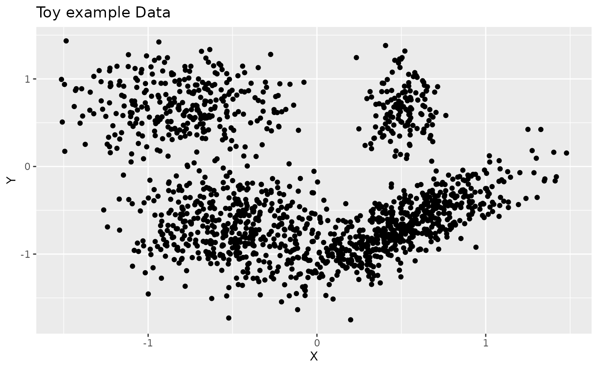

Slice Sampling of Dirichlet Process Mixture of Gaussian distributions
Source:R/DPMGibbsN_SeqPrior.R
DPMGibbsN_SeqPrior.RdSlice Sampling of Dirichlet Process Mixture of Gaussian distributions
Usage
DPMGibbsN_SeqPrior(
z,
prior_inform,
hyperG0,
N,
nbclust_init,
add.vagueprior = TRUE,
weightnoninfo = NULL,
doPlot = TRUE,
plotevery = N/10,
diagVar = TRUE,
verbose = TRUE,
...
)Arguments
- z
data matrix
d x nwithddimensions in rows andnobservations in columns.- prior_inform
an informative prior such as the approximation computed by
summary.DPMMclust.- hyperG0
a non informative prior component for the mixing distribution. Only used if
add.vaguepriorisTRUE.- N
number of MCMC iterations.
- nbclust_init
number of clusters at initialization. Default to 30 (or less if there are less than 30 observations).
- add.vagueprior
logical flag indicating whether a non informative component should be added to the informative prior. Default is
TRUE.- weightnoninfo
a real between 0 and 1 giving the weights of the non informative component in the prior.
- doPlot
logical flag indicating whether to plot MCMC iteration or not. Default to
TRUE.- plotevery
an integer indicating the interval between plotted iterations when
doPlotisTRUE.- diagVar
logical flag indicating whether the variance of each cluster is estimated as a diagonal matrix, or as a full matrix. Default is
TRUE(diagonal variance).- verbose
logical flag indicating whether partition info is written in the console at each MCMC iteration.
- ...
additional arguments to be passed to
plot_DPM. Only used ifdoPlotisTRUE.
Value
a object of class DPMclust with the following attributes:
mcmc_partitions:a list of length
N. Each elementmcmc_partitions[n]is a vector of lengthngiving the partition of thenobservations.alpha:a vector of length
N.cost[j]is the cost associated to partitionc[[j]]listU_mu:a list of length
Ncontaining the matrices of mean vectors for all the mixture components at each MCMC iterationlistU_Sigma:a list of length
Ncontaining the arrays of covariances matrices for all the mixture components at each MCMC iterationU_SS_list:a list of length
Ncontaining the lists of sufficient statistics for all the mixture components at each MCMC iterationweights_list:logposterior_list:a list of length
Ncontaining the logposterior values at each MCMC iterationsdata:the data matrix
d x nwithddimensions in rows andnobservations in columns.nb_mcmcit:the number of MCMC iterations
clust_distrib:the parametric distribution of the mixture component -
"gaussian"hyperG0:the prior on the cluster location
References
Hejblum BP, Alkhassim C, Gottardo R, Caron F and Thiebaut R (2019) Sequential Dirichlet Process Mixtures of Multivariate Skew t-distributions for Model-based Clustering of Flow Cytometry Data. The Annals of Applied Statistics, 13(1): 638-660. <doi: 10.1214/18-AOAS1209> <arXiv: 1702.04407> https://arxiv.org/abs/1702.04407 doi:10.1214/18-AOAS1209
Examples
rm(list=ls())
library(NPflow)
#Number of data
n <- 1500
# Sample data
#m <- matrix(nrow=2, ncol=4, c(-1, 1, 1.5, 2, 2, -2, 0.5, -2))
m <- matrix(nrow=2, ncol=4, c(-.8, .7, .5, .7, .5, -.7, -.5, -.7))
p <- c(0.2, 0.1, 0.4, 0.3) # frequence des clusters
sdev <- array(dim=c(2,2,4))
sdev[, ,1] <- matrix(nrow=2, ncol=2, c(0.3, 0, 0, 0.3))
sdev[, ,2] <- matrix(nrow=2, ncol=2, c(0.1, 0, 0, 0.3))
sdev[, ,3] <- matrix(nrow=2, ncol=2, c(0.3, 0.15, 0.15, 0.3))
sdev[, ,4] <- .3*diag(2)
c <- rep(0,n)
z <- matrix(0, nrow=2, ncol=n)
for(k in 1:n){
c[k] = which(rmultinom(n=1, size=1, prob=p)!=0)
z[,k] <- m[, c[k]] + sdev[, , c[k]]%*%matrix(rnorm(2, mean = 0, sd = 1), nrow=2, ncol=1)
#cat(k, "/", n, " observations simulated\n", sep="")
}
d<-2
# Set parameters of G0
hyperG0 <- list()
hyperG0[["mu"]] <- rep(0,d)
hyperG0[["kappa"]] <- 0.001
hyperG0[["nu"]] <- d+2
hyperG0[["lambda"]] <- diag(d)/10
# hyperprior on the Scale parameter of DPM
a <- 0.0001
b <- 0.0001
# Number of iterations
N <- 30
# do some plots
doPlot <- TRUE
nbclust_init <- 20
## Data
########
library(ggplot2)
p <- (ggplot(data.frame("X"=z[1,], "Y"=z[2,]), aes(x=X, y=Y))
+ geom_point()
+ ggtitle("Toy example Data"))
p

if(interactive()){
# Gibbs sampler for Dirichlet Process Mixtures
##############################################
MCMCsample <- DPMGibbsN(z, hyperG0, a, b, N=1500, doPlot, nbclust_init, plotevery=200,
gg.add=list(theme_bw(),
guides(shape=guide_legend(override.aes = list(fill="grey45")))),
diagVar=FALSE)
s <- summary(MCMCsample, posterior_approx=TRUE, burnin = 1000, thin=5)
F1 <- FmeasureC(pred=s$point_estim$c_est, ref=c)
F1
MCMCsample2 <- DPMGibbsN_SeqPrior(z, prior_inform=s$param_posterior,
hyperG0, N=1500,
add.vagueprior = TRUE,
doPlot=TRUE, plotevery=100,
nbclust_init=nbclust_init,
gg.add=list(theme_bw(),
guides(shape=guide_legend(override.aes = list(fill="grey45")))),
diagVar=FALSE)
s2 <- summary(MCMCsample2, burnin = 500, thin=5)
F2 <- FmeasureC(pred=s2$point_estim$c_est, ref=c)
F2
}